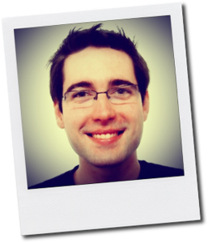

Pavol Rusnák
#foss #opensource #openhardware #opendata #bitcoin #crypto #interactive #media #electronics #hacker #prague
- Education
-
Charles University in Prague, Faculty of Mathematics and Physics Computer science 2002-2008
Major: Database Systems
Minor: Distributed Systems
Thesis: Effective XML Communication Using SOAP and Automata
- Work Experience
-
SatoshiLabsCTO, 2012 - present
- creators of TREZOR: the first hardware wallet
- changing the world via Bitcoin related projects
pebe/labWizard, 2012 - present
- hi-tech experimental, new media interactive installations
SUSE Senior Software Engineer, Prague, 2006 - 2012
- Boosters Team: making it easier to contribute to openSUSE
- openSUSE Board: providing guidance and support for the project
- software packaging, collaboration with upstream communities
ZLD Software Engineer, Prague, 2005 - 2006
- designing and implementing GIS related applications in C#.NET
- administering MS SQL server
eSolutions Web Developer, Prague, 2004 - 2004
- developing web applications in PHP
- administering MySQL server
- Skills
-
Programming languages
- C / C++
- Python
- shellscript
- Python
- x86, ARM Assembly
- JavaScript / ECMAScript
- PHP, Ruby, Lua
- C#
- Java / Groovy
- Prolog, Haskell, Scheme / LISP
- Pascal / Object Pascal (Delphi)
Web related technologies
- [X]HTML, CSS, jQuery
- Rails, Sinatra, Django, Flask, Grails
- MySQL, PostgreSQL, SQLite, MSSQL, Informix, Oracle
- CouchDB, MongoDB, Redis, Neo4j
- Node.js
Hardware and technology
- Microcontrollers (8-, 16-, 32-bit: Atmel AVR, TI MSP430, ARM Cortex)
- Android application development
- Qt application development
- Graphics (OpenGL+GLUT, SDL, Love2D, OpenCV)
Development tools
- GCC, Visual Studio Code, MonoDevelop
- Eclipse, IntelliJ Idea, NetBeans
- QtCreator
- vim
- Processing, Arduino, PureData
- debugging tools (GDB, strace, ltrace)
- build systems (autotools, qmake, CMake, SCons)
- source code management (git, Mercurial, Subversion, CVS, Bazaar-NG)
- packaging (rpm, ebuild, deb)
Networking and Security
- network architectures
- low- and high-level protocols
- cryptographic algorithms
- service-oriented architecture
Theoretical background
- Mathematical Analysis
- Linear Algebra
- Discrete Mathematics
- Propositional and Predicate Logic
- Algorithms and Data Structures
- Automata and Grammars
- Complexity and Computability
- Compiler Principles
- 2D Graphics, basic 3D Graphics
- Acoustics and Sound processing
Languages
- Slovak (native speaker)
- Czech (fluently)
- English (state exam)
- German (intermediate)
- Notable achievements
-
Positions held
- Brmlab (Hackerspace Prague) Founder
- openSUSE Project Board Member (2009-2011)
- Google Summer of Code, 2011, openSUSE Administrator
- Google Summer of Code, 2009, openSUSE Mentor
- Google Summer of Code, 2008, openSUSE Mentor
Talks and sessions at various events
- FOSDEM, Brussels, Belgium
- Chaos Communication Congress, Hamburg, Germany
- Hackers Congress, Paralelni Polis, Prague
- LinuxTag, Berlin, Germany
- SVG Open, Paris, France
- Google Summer of Code Mentor Summit, Mountain View, California, USA
- MeeGo Conference, Dublin, Ireland
- OHM Camp, Geestmerambacht, Netherlands
- openSUSE Conference, Nuremberg, Germany
- FrOSCamp, Zurich, Switzerland
- FrOSCon, Sankt Augustin, Germany
- LinuxAlt, Brno, Czech Republic
- Linuxwochen, Vienna, Austria
- Invex, Brno, Czech Republic
- LinuxExpo, Prague, Czech Republic
- U-IN-X, Prague, Czech Republic
- InstallFest, Prague, Czech Republic
- OSSConf, Zilina, Slovakia